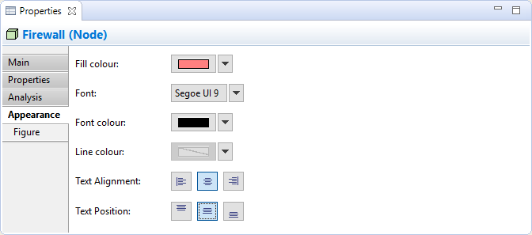
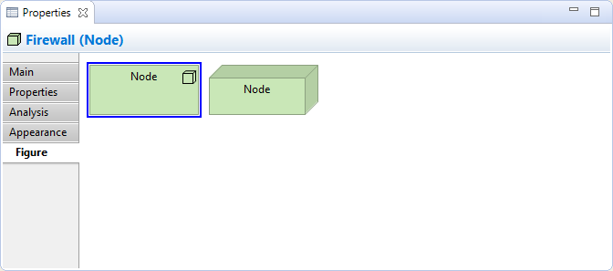

Sélectionner un élément dans une vue signifie que vous pouvez modifier ou consulter des propriétés visuelles additionnelles dans la fenêtre des propriétés. Différents réglages visuels peuvent être appliqués à un élément pour chacune des occurences distinctes dans une vue. Par exemple, l'élément "Service d'application" peut être coloré en bleu dans une vue et en gris dans une autre.
L'onglet apparence
Modifier les propriétés d'apparence pour un élément ArchiMate dans une vue
Cet onglet n'est disponible que lorsqu'un élément est sélectionné dans une vue.
| Couleur de fond: | Définit la couleur de fond pour l'élément sélectionné. Le bouton "Défaut" définit la couleur de fond avec la valeur par défaut. |
| Police de caractères: | Définit la police de caractères utilisée pour le texte pour l'élément sélectionné. Le bouton "Défaut" définit la police de caractères avec la valeur par défaut définie dans les préférences. |
| Couleur de la police de caractères: | Définit la couleur de la police de caractères utilisée pour le texte de l'élément sélectionné. Le bouton "Défaut" définit la couleur de la police de caractères avec la valeur par défaut. |
| Couleur de la ligne: | Définit la couleur de la ligne utilisée pour dessiner l'élément sélectionné. Le bouton "Défaut" définit la couleur de la ligne comme étant la valeur par défaut. Si ceci est désactivé, c'est parce que la couleur de la ligne est dérivée de la couleur de fond de l'élément, comme indiqué dans les préférences. |
| Alignement du texte: | Aligne le texte de l'élément sélectionné à gauche, au centre ou à droite. |
| Position du texte: | Aligne le texte de l'élément sélectionné en haut, au mileu ou en bas. |
L'onglet des illustrations
Réglages des propriétés de "Figure" pour un équipement
Cet onglet n'est disponible que lorsque qu'un élément est sélectionné dans une vue et seulement pour certaines figures.
Certains éléments peuvent être représentés par des symboles alternatifs. Ce sont:
La figure par défaut à utiliser lors de la création de nouveaux éléments peut être définie dans les préférences.